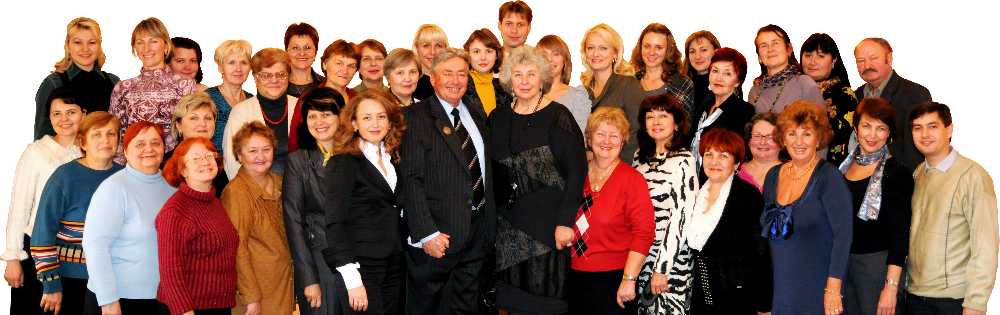

У 1975 році на базі музичної школи Сумського музично-хорового товариства була створена четверта музична школа з контингентом більш ніж 375 учнів. Школа розташовувалась по вулиці Петропавлівській в будинку музичної школи Чурілова. У 90-х роках школа отримала нове приміщення по вулиці Вільний лужок, 7.
З гідно з рішенням Сумської міської ради у 2007 році навчальний заклад було створено як Комунальний заклад Сумської міської ради – Сумська дитяча музична школа №4.
У лютому 2008 року, відповідно до наказу відділу культури та туризму Сумської міської ради була проведена державна атестація школи. За рішенням Регіональної експертної ради щодо підсумків державної атестації початкових спеціалізованих мистецьких навчальних закладів міста Суми школа була атестована з відзнакою.
 Колектив Сумської дитячої музичної школи №4Перший випускний іспит у 2016р відбудеться вже 04 травня у середу.
Сумська дитяча музична школа №4 оголошує набір учнів на 2016-2017 навчальний рік.
21 квітня у концертній залі Сумської обласної філармонії відбудеться творчий концерт - звіт учнів та викладачів "Весна співоча". Початок о 16:00.